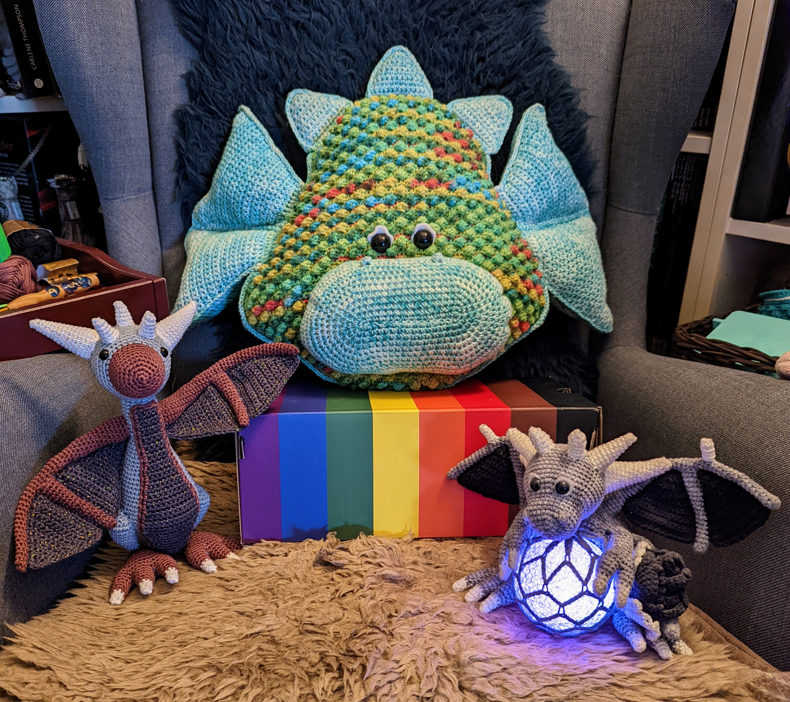
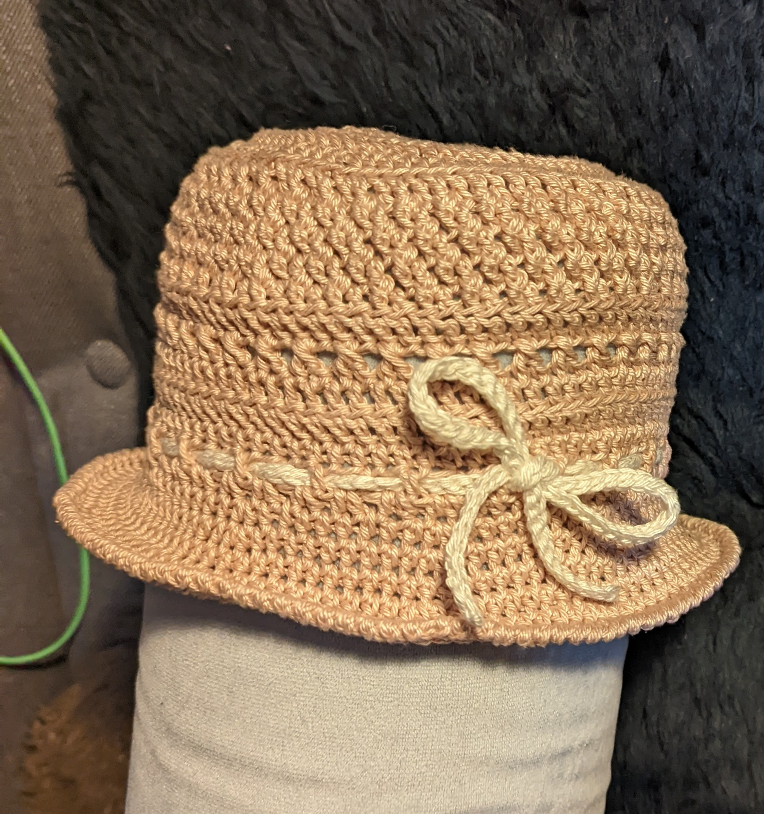

- spending time with my wife
- Gaming
- Crochet
- watching streams from my favorite games
Games I play:
- obviously MMORPGs, like 'Guild Wars 2' 😉 and 'Elder Scrolls Online'
- RGPs, like 'Final Fantasy Game Series', 'Assassin's Creed Series', 'Horizon Series', 'Clair Obscur: Expedition 33', 'Elders Scrolls Series', 'Tales of Series' and many more...
- Cozy Games, like 'Disney Dreamlight Valley', 'A little to the Left', 'Unpacking', 'Tiny Glade', 'Lake', 'Spiritfarer' and many more...
- Simulator Games, like 'House Flipper 1 & 2', 'Power Wash Simulator', 'Crime Scene Cleaner' ...
Things I crocheted:  
Homepage